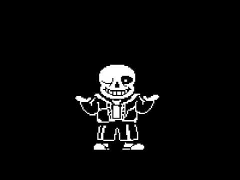
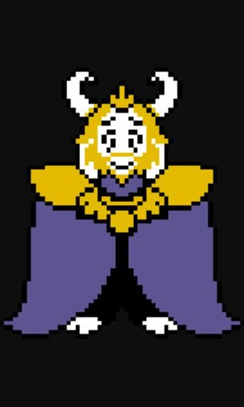
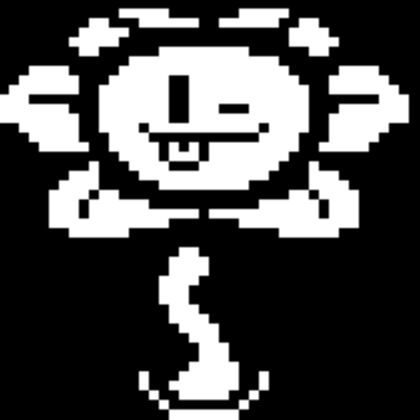
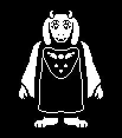

Undertale es un juego en el que controlamos a un humano caído a un mundo de mounstruos, en el que se encontrará con varios contrincantes los cuales tendrá que vences (a su manera) para poder salir de este lugar, ¿Podrá nuestro personaje salir de este lío?
Personajes

Sans, un personaje amigable con elcual nos toparemos varias veces en la aventura

Asgore, rey de los mounstruos, el único con el poder de darte la libertad, y de quitartela, ¿estás preparado?

Flowey, una linda e inocente flor... o no?

Toriel, un rayo de esperanza en la oscuridad, nos cuidará sin importar que